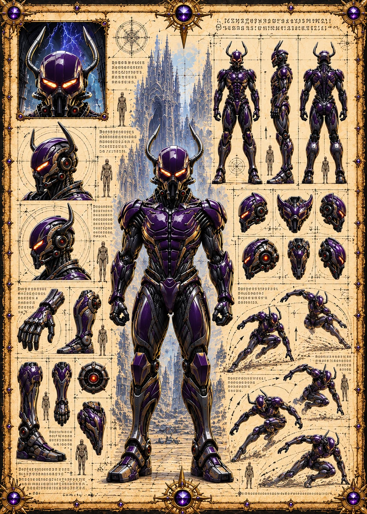

©
©
GENEZYS ARCHIVE · Earth 1 · Legionnaire
Quora
Fabric Render

Archive record
Quora tears through existence as easily as through sailcloth. The Planar Rend empties one enemy's energy while another takes the blow. Among the North Marauders, Quora is loud, proud, and the first to volunteer for every rift.
Combat signature
Planar Rend
160 Cosmara
210 Animus
250 Vitalis
Tears hole through existence: Sets the target's Cosmara to 0 for 1 round. Deals 140 damage to a different enemy.
Genezys 09:05 ™&©2026LEGIONS
